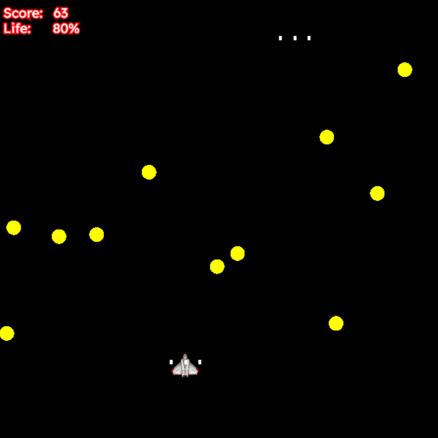

CIRCLE BLASTER REVAMP
For this project, I want to revamp Circle Blaster's current systems to feel more consistent and add on to the game's mechanical features.
- + ENHANCED MOVEMENT MECHANICS
- + NEW ENEMIES & MECHANICS
- + SOUND EFFECTS
- + MUSIC

SFX FOCUS
Since a handful of the games mechanical and visual development is already present, I want to spend time working on audio for the game.
This would include regular SFX and hopefully some music.
MECHANICS
The game will feature additions like new enemies, levels using waves of enemies, changes to player and enemy movement, and possibly power-ups.
REVAMPLED AESTHETIC
Special effects, coloring, and some particle effects will be used to enhance the game's appeal.